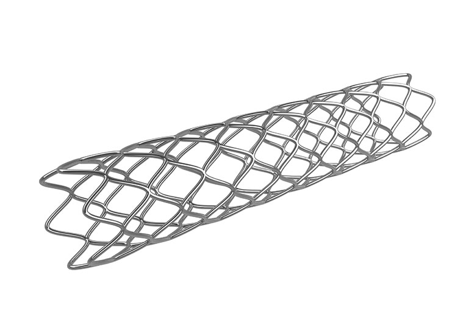

Physicians may encounter a multitude of risks and complications during PCI
- Long lesions (>20 mm)
- Bifurcation
- Eccentric anatomy
- Tortuous anatomy
- Angulated anatomy
- Calcifications
- Left main
- Multilesion PCI
PCI has inherent risks that can include thrombotic complications such as:
- Myocardial infarction
- Stent thrombosis
- Ischemia-driven revascularization

These risk factors are generalized to PCI procedures.